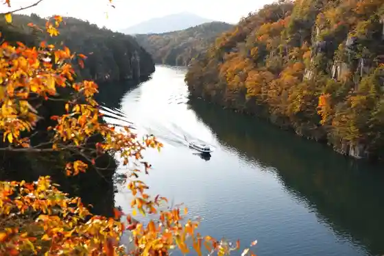
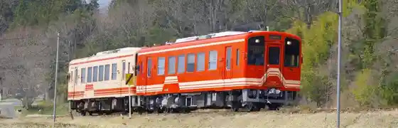

Ena Kyo no Autumn Leaves
Ena, Gifu · 0573-32-1790 · Official / source link

Ena Kyo
Ena, Gifu · 0573-25-4058 · Official / source link
Ena Kyo Kuruzu
Ena, Gifu · 0573-25-4800 · Official / source link
Meichi Tetsudo
Ena, Gifu · 0573-54-4101 · Official / source link

Iwa Village Castle Ruins
Ena, Gifu · 0573-43-3231 · Official / source link
Iwa Village Castle Town
Ena, Gifu · 0573-43-3231 · Official / source link
Nakasendo Hiroshige Art Museum
Ena, Gifu · 0573-20-0522 · Official / source link
Ena Kyo Onsen
Ena, Gifu · 0573-25-4058 · Official / source link
Fukuju no Sato Mongoru Village
Ena, Gifu · 0573-47-3010 · Official / source link
Gifuken Kurisutaru Park Ena Su Ga to Ba
Ena, Gifu · 0573-28-3390 · Official / source link
Roadside Station Soba no Sato Rasseimisato
Ena, Gifu · 0573-28-3310 · Official / source link
Roadside Station Obachan City Yamaoka
Ena, Gifu · 0573-59-0051 · Official / source link
Roadside Station Kamiyahagi Ra Fore Fukuju Village
Ena, Gifu · 0573-48-3366 · Official / source link
Enaterasu Ena Kanko Bussan Kan
Ena, Gifu · 0573-25-4058 · Official / source link
Tono Ranch
Ena, Gifu · 080-1577-4307 · Official / source link
Hiyomo no Shidarezakura
Ena, Gifu · 0573-26-2111 · Official / source link
Nitta Cherry Blossoms
Ena, Gifu · 0573-26-2111 · Official / source link
Meichi Tetsudo (Gurume Shokudosha)
Ena, Gifu · 0573-54-4101 · Official / source link
Fuku Iku Farm Ichigo Kari
Ena, Gifu · 090-1623-9213 · Official / source link
Kamiyahagi Furyokuhatsuden Tokoro
Ena, Gifu · Official / source link
Iwa Village History Museum
Ena, Gifu · 0573-43-3057 · Official / source link
Ena Gin Forest
Ena, Gifu · 0800-200-5095 · Official / source link
Benkei Sugi
Ena, Gifu · Official / source link
Nihondai Sei Village
Ena, Gifu · 0573-54-3944 · Official / source link
Ena Kyo Yuransen no Badotchingu
Ena, Gifu · 0573-25-4800 · Official / source link
Buruberii no Oka Hopi
Ena, Gifu · 090-3424-2020 · Official / source link
Manabitoasobi no Gokan Experience Iwamura Itsutsu Ko
Ena, Gifu · 0573-43-2111 · Official / source link
Ena Kyo Sazanami Plaza Cherry Blossoms
Ena, Gifu · 0573-32-1790 · Official / source link
Ryu Go Tera
Ena, Gifu · 0573-54-2540 · Official / source link
Ochiai Toride (Senjojiki Park)
Ena, Gifu · 0573-54-2111 · Official / source link
O Maki no Ho no Hakasho
Ena, Gifu · 0573-54-2111 · Official / source link
Akechimitsuhide Ko Gakumon Tokoro to Tenjin Shrine
Ena, Gifu · 0573-54-2111 · Official / source link
Kinpei Sha Hachioji Shrine
Ena, Gifu · 0573-54-2345 · Official / source link
Meichi Castle Ruins
Ena, Gifu · 0573-54-2111 · Official / source link
Saka Ori Tanada
Ena, Gifu · 0573-23-2032 · Official / source link
Ozato Kawa Dam
Ena, Gifu · 0573-59-0056 · Official / source link
Iwa Village Jozo (Kabu)
Ena, Gifu · 0573-43-2029 · Official / source link
Chitchana Farm Hara Farm
Ena, Gifu · 080-4699-0634 · Official / source link
Naka Miyama Toride
Ena, Gifu · Official / source link
DAIONJI FARM
Ena, Gifu · 080-6960-9052 · Official / source link
Kasagi Yama Bokyo no Mori Campground
Ena, Gifu · Official / source link
Koshizawa Koteji
Ena, Gifu · 0573-47-3010 · Official / source link
Kushihara Onsen Baths Oto Campground
Ena, Gifu · 0573-52-2960 · Official / source link
Ne no Ue Highlands Ho Ko no Mizumi Campground
Ena, Gifu · 0573-65-3595 · Official / source link
Taisho Village Roman Tei
Ena, Gifu · 0573-55-0057 · Official / source link
Kyu Miyake Ie
Ena, Gifu · 0573-54-3944 · Official / source link
Ena Kyo Bijita Center
Ena, Gifu · 0573-32-1790 · Official / source link
Daini Buraku Sono
Ena, Gifu · Official / source link
Taisho Roman Kan
Ena, Gifu · 0573-54-2014 · Official / source link
Taisho Village Museum
Ena, Gifu · 0573-54-3947 · Official / source link
Taishojidai Kan
Ena, Gifu · 0573-54-3549 · Official / source link
Taisho Roji
Ena, Gifu · Official / source link
Nihondai Sei Village Hall (Kyu Akechi Town Hall)
Ena, Gifu · Official / source link
Nakauma Kaido Ukare Alley
Ena, Gifu · Official / source link
Kyukaido (Nakauma Kaido to Namboku Kaido) no Kosaten
Ena, Gifu · Official / source link
Mitsuhide Ko Teue E no Momiji
Ena, Gifu · Official / source link
Ishikawa Tomato Farm
Ena, Gifu · 080-2667-6269 · Official / source link
Ishikawa Ichigo Farm
Ena, Gifu · 080-2667-6269 · Official / source link
Ena Kyo Cherry Blossoms
Ena, Gifu · 0573-32-1790 · Official / source link
Iidaka Yama Man Kachi Tera
Ena, Gifu · 0573-56-2810 · Official / source link
Nakasendo Meijitenno Oi Anzai Tokoro
Ena, Gifu · 0573-25-7101 · Official / source link
Kakashi Sutoriito
Ena, Gifu · 0573-27-3110 · Official / source link
Suwagane (Tsuruoka Yama)
Ena, Gifu · 0573-54-2111 · Official / source link
Nakasendo Oi Yado
Ena, Gifu · 0573-25-4058 · Official / source link
Nakasendo Hishi Ya Museum
Ena, Gifu · 0573-20-3266 · Official / source link
no Village Keikan Nippon'ichi Chiku
Ena, Gifu · Official / source link
Katsukawa Ie
Ena, Gifu · 0573-43-4770 · Official / source link
Castle Ruins Park (Taiko Yagura Shimoda Utako Bengaku Tokoro Chishin Kan)
Ena, Gifu · Official / source link
Meshi Hazama Castle Ruins
Ena, Gifu · Official / source link
Ki Village Tei
Ena, Gifu · 0573-43-2846 · Official / source link
Tosa Ya
Ena, Gifu · 0573-43-3451 · Official / source link
Kano Ie
Ena, Gifu · 0573-43-3231 · Official / source link
Iwamura Bijutsu no Kan (Kyu Shibata Ie)
Ena, Gifu · 0573-43-4660 · Official / source link
Kasagi Kyo
Ena, Gifu · Official / source link
Toru Hara Gorge
Ena, Gifu · Official / source link
Ena Hanare no Yado
Ena, Gifu · 0573-25-2022 · Official / source link
Saigyo Forest
Ena, Gifu · 0573-25-4058 · Official / source link
Toyama Sakura
Ena, Gifu · Official / source link
Go Ke Za
Ena, Gifu · Official / source link
Agachi Ringo Park
Ena, Gifu · 0573-54-4467 · Official / source link
Ena Kasagi Yamaguri Sono
Ena, Gifu · 0573-32-1598 · Official / source link
Yamaoka Eki Kantenkan
Ena, Gifu · 0573-56-3140 · Official / source link
Kasagi Yama Kuraimingueria
Ena, Gifu · 0573-26-6857 · Official / source link
Ichiya Castle Ruins (Ena)
Ena, Gifu · 0573-54-2111 · Official / source link
Koteji Shakunage
Ena, Gifu · 0573-56-2785 · Official / source link
Oku Yahagi Lakeside no Sakura Namiki
Ena, Gifu · Official / source link
Kineshidare Momozono
Ena, Gifu · 0573-26-6863 · Official / source link
Meshi Chi Kogen Shizen Tento Village
Ena, Gifu · 0573-22-3453 · Official / source link
Kawasemi
Ena, Gifu · 0573-47-3010 · Official / source link
Oku Yahagi Rekurieshon Center
Ena, Gifu · 0573-52-2411(9:00-17:30) · Official / source link
Busshukurafuto Gifu Ena
Ena, Gifu · Official / source link
Shirataka Campground
Ena, Gifu · 090-3556-4629 · Official / source link